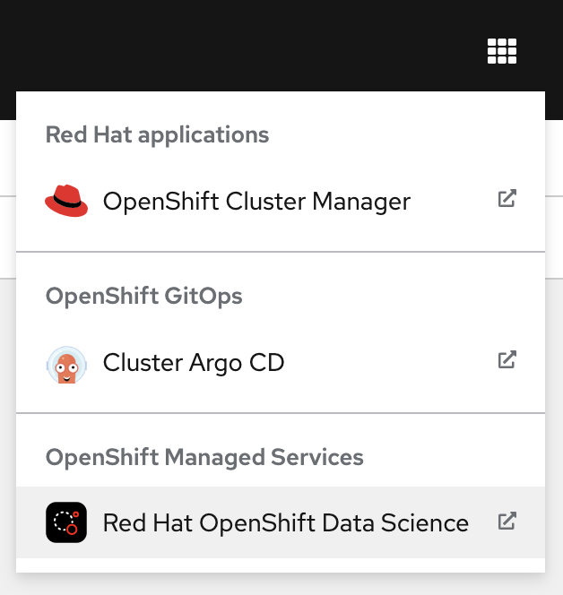
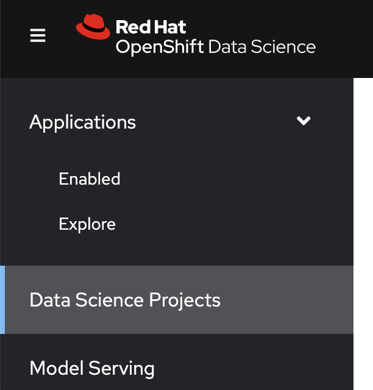
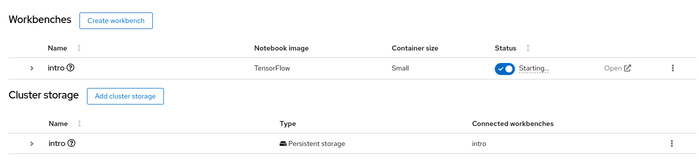

Demo
In this exercise, you will use RHODS to train and evaluate a simple machine learning model, by using JupyterLab and other common ML libraries.
-
Open the RHODS dashboard.
-
In a web browser, navigate to the Web Console of your Red Hat OpenShift cluster, and log in.
-
Click the applications menu in the top navigation bar of OpenShift, then click Red Hat OpenShift Data Science.
 -
If prompted, log in with your Red Hat OpenShift credentials.
-
-
Configure the workbench of your data science project.
A RHODS workbench is a containerized application that includes commonly used data science tools and libraries, such as JupyterLab, TensorFlow, and PyTorch. RHODS provides you with a collection of workbench container images, each one preconfigured and tailored to a specific data science use case.
-
Click Data Science Projects in the left sidebar.
 -
Create a data science project. Click Create data science project. In the modal window that opens, enter a name and click Create.
If you are using Red Hat OpenShift from the developer sandbox, then a project is already created for you.
-
Click the newly created project.
-
In the project page, click Create workbench and complete the form with the following values.
Name
introNotebook image - Image selection
TensorFlowNotebook image - Version selection
Select the recommended option
Do not modify the default values of the rest of the fields.
-
Click Create workbench. RHODS creates the workbench and the associated persistent storage.

-
-
Open the workbench and clone the demo code.
-
Make sure that the
introworkbench is running and click Open. -
If prompted, log in with your Red Hat OpenShift credentials.
-
Click Allow selected permissions to grant the workbench access to your data science project.
-
Verify that the JupyterLab interface opens in a new browser tab.
-
Click the Git icon in the left sidebar.
-
Click Clone a repository.

-
Enter https://github.com/RedHatQuickCourses/rhods-intro.git as the repository, and click Clone.
-
-
Open and run the notebook.
-
In the file explorer, navigate to the
rhods-intro/notebooks/intro-demodirectory. -
To open the notebook, double
notebook.ipynb. The notebook include instructions and code. -
Click the first cell, then press Shift+Enter to execute the cell and move to the next one.
-
Execute and review the rest of the cells. Keep pressing Shift+Enter until you reach the bottom.
-
-
Run the
intro-text-generationnotebook-
In the data science project dashboard, create a workbench with the default image for PyTorch.
-
In the new workbench, open JupyterLab and clone the https://github.com/RedHatQuickCourses/rhods-intro.git repository as you did in the previous step.
-
Open the
rhods-intro/intro-text-generation/notebook.ipynbnotebook in JupyterLab and execute the steps. The instructions are embedded in the notebook.
-